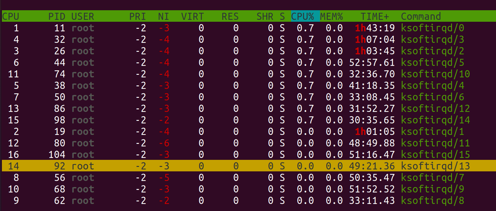
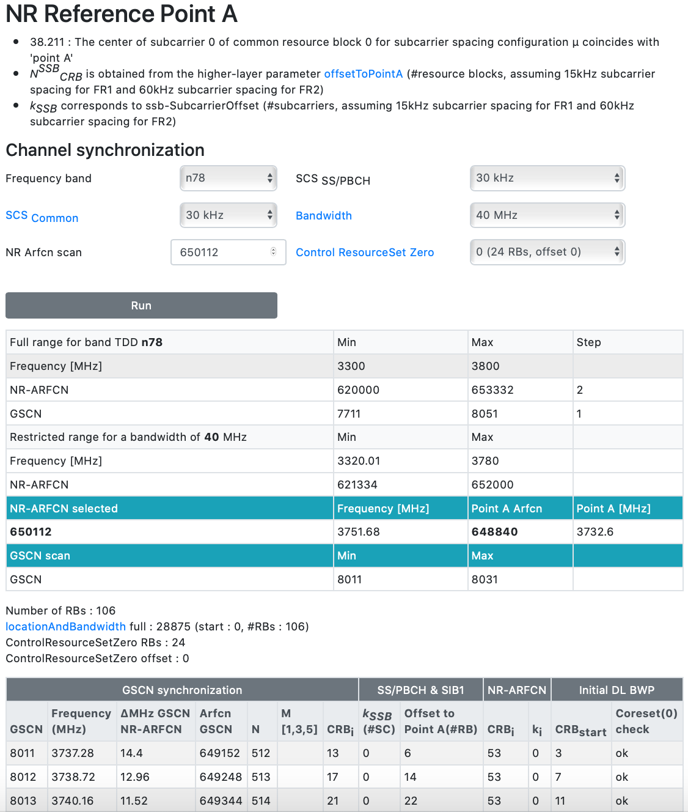

DU Installation¶
Introduction¶
The DU will be installed in several Docker containers that run on metal on the host machine. As mentioned in the introduction, a separate Virtual Machine will host the RIC and the CU and their relative pods will be handled by Kubernetes inside that VM. Here we focus on the steps to get DU and L1 up and running.
Variables needed for this install¶
Before proceeding you may want to crosscheck and modify some paramters that caracterise each deployment and depends on the desired provisioning of the components. The parameters that should be considered for this purpose and can be safely modified are:
5G variables¶
- plmn_identity [ eg 235 88 ]
- nr_cell_identity [ eg 1 any number ]
- nr_pci [ eg 1 not any number. Ask Accelleran to do the PCI planning ]
- 5gs_tac [ eg 1 ]
Frequency variables¶
- center_frequency_band [ eg 3751.680 ]
- point_a_arfcn [ 648840 consistent with center freq, scs 30khz ]
- band [ 77 consistent with center frequency ]
licenses and files needed (see intro)¶
- accelleran-du-phluido-%Y-%m-%d-release.zip
- phluido_docker_xxxx.tar
- effnet-license-activation-%Y-%m-%d.zip
- 32 digit phluido license key, [ ex 2B2A-962F-783F-40B9-7064-2DE3-3906-9D2E ]
For any other modification it is advisable to make contact with the Accelleran service desk as of course, if in principle every paramter in the confuguration file is up for modification, it is certainly not recommendable to proceed in that declaration as each front end may or may not work as a consequence and the analysis and recovery from error scenario will be less than intuitive
Docker installation on the Server¶
Make sure Docker and docker-compose have been installed and that docker can be run without superuser privileges, this is a prerequisite. DO NOT install Kubernetes where DU and L1 will run
Add the Docker APT repository:
curl -fsSL https://download.docker.com/linux/ubuntu/gpg | sudo gpg --dearmor -o /usr/share/keyrings/docker-archive-keyring.gpg
echo "deb [arch=$(dpkg --print-architecture) signed-by=/usr/share/keyrings/docker-archive-keyring.gpg] https://download.docker.com/linux/ubuntu $(lsb_release -cs) stable" | sudo tee /etc/apt/sources.list.d/docker.list > /dev/null
sudo apt update
Install the required packages:
sudo apt install docker-ce
sudo apt install docker-ce-cli
sudo apt install containerd.io
sudo apt install docker-compose
Add your user to the docker group to be able to run docker commands without sudo access. You might have to reboot or log out and in again for this change to take effect.
sudo usermod -aG docker $USER
To check if your installation is working you can try to run a test image in a container:
sudo docker run hello-world
sudo systemctl enable docker
sudo systemctl daemon-reload
sudo systemctl restart docker
Obtain the Effnet and Phluido licenses¶
In this phase we will need to act in parallel for the DU and the L1/RRU licenses, which depend on our partner company so it is essential to give priority and possibly anticipate these two steps as there is no specific effort involved from the user/customer perspective and they may require longer than one working day before we can proceed further.
Phluido isntall¶
Phluido : Install a Low Latency Kernel¶
The PHY layer has very stringent latency requirements, therefore we install a low latency kernel:
sudo apt install linux-image-lowlatency
make sure this line is present in the /etc/default/grub file.
It forces the GRUB to start a lowlatency kernel.
$ cat /etc/default/grub | grep FLAV
GRUB_FLAVOUR_ORDER=lowlatency
Create a sysctl configuration file to configure the low latency kernel:
sudo tee /etc/sysctl.d/10-phluido.conf <<EOF
# Improves scheduling responsiveness for Phluido L1
kernel.sched_min_granularity_ns = 100000
kernel.sched_wakeup_granularity_ns = 20000
kernel.sched_latency_ns = 500000
kernel.sched_rt_runtime_us = -1
# Message queue
fs.mqueue.msg_max = 64
EOF
Remove the generic kernel to avoid the low latency kernel to be replaced by a generic kernel when updates are performed:
sudo apt remove linux-image-generic
sudo apt autoremove
In order to avoid possible system performance degradation, CPU scaling must be disabled:
sudo apt install cpufrequtils
echo 'GOVERNOR="performance"' | sudo tee /etc/default/cpufrequtils
sudo systemctl disable ondemand
Restart the machine to make the changes take effect:
sudo reboot
Phluido License: Run the sysTest utility from Phluido¶
to go to the directory where the Phluido sysTest utility is :
$ ./sysTest
Running system test...
01234567890123456789012345678901
System test completed, output written to file "sysTest.bin".
( The test takes around 90 seconds) This will run a test of the system that will allow to determine if the server is properly configured and capable of running the demanding L1/RRU components Once it is finsihed it produces a file sysTest.bin in the same directory Send this file to Accelleran, to obtain the Phluido license key. Send this .bin file to phluido to receive a proper license.
Effnet Install¶
Effnet License: Install and check your Yubikey¶
For the license activation file we indicate the generic format yyyy_mm_dd as the file name may vary from case to case, your Accelleran point of contact will make sure you receive the correct license activation archive file which will have a certain timestamp on it, example effnet-license-activation-2021-12-16.zip
if you don't have yet the effnet license activation bundle, in order to obatin one you must comunicate to Accelleran the serial number of the Yubikey you intend to use so to be enabled for usage. You can obtain this information by using the following command on your server where the Yubikey has been installed physically to a USB port:
To check if the server can see the key do (in this example Device004 is your key):
lsusb
~$ lsusb
Bus 002 Device 002: ID 8087:8002 Intel Corp.
Bus 002 Device 001: ID 1d6b:0002 Linux Foundation 2.0 root hub
Bus 001 Device 002: ID 8087:800a Intel Corp.
Bus 001 Device 001: ID 1d6b:0002 Linux Foundation 2.0 root hub
Bus 004 Device 003: ID 2500:0020 Ettus Research LLC USRP B200
Bus 004 Device 001: ID 1d6b:0003 Linux Foundation 3.0 root hub
**Bus 003 Device 004: ID 1050:0407 Yubico.com Yubikey 4 OTP+U2F+CCID**
Bus 003 Device 029: ID 2a70:9024 OnePlus AC2003
Bus 003 Device 006: ID 413c:a001 Dell Computer Corp. Hub
Bus 003 Device 016: ID 20ce:0023 Minicircuits Mini-Circuits
Bus 003 Device 001: ID 1d6b:0002 Linux Foundation 2.0 root hub
sudo apt install yubikey-manager
ykman list --serials
#13134288
Effnet License: Create a PCSCD Docker Image¶
The DU software needs access to a YubiKey that contains its license. The license in the YubiKey is shared by the PCSCD daemon, which itself can run in a Docker container to satisfy OS dependencies. Plug the YubiKey in a USB port of the machine. Then, create a Dockerfile named Dockerfile.pcscd for this Docker image:
mkdir -p pcscd
tee pcscd/Dockerfile.pcscd <<EOF
FROM ubuntu:20.04
RUN \
set -xe && \
apt-get update && \
DEBIAN_FRONTEND="noninteractive" apt-get install -y \
pcscd
# Cleanup
RUN \
set -xe && \
apt-get clean && \
rm -rf \
/var/lib/apt/lists/* \
/var/tmp/* \
/tmp/*
ENTRYPOINT ["/usr/sbin/pcscd", "--foreground"]
EOF
The Docker image can now be built and started with:
docker build --rm -t pcscd_yubikey - <pcscd/Dockerfile.pcscd
docker run --restart always -id --privileged --name pcscd_yubikey_c -v /run/pcscd:/run/pcscd pcscd_yubikey
You can verify it is running correct with the command:
docker container ls --filter name=pcscd_yubikey_c
If every step was performed correctly this command should produce output similar to:
CONTAINER ID IMAGE COMMAND CREATED STATUS PORTS NAMES
df4f41eb70c9 pcscd_yubikey "/usr/sbin/pcscd --f…" 1 minute ago Up 1 minute pcscd_yubikey_c
Effnet License: activate the yubikey¶
In order to activate the license dongles unzip the received license activation bundle effnet-license-activation-yyyy-mm-dd.zip (as mentioned the date may differ on each case so let's use the generic format) and then you need to load the included Docker image into your docker-daemon, i.e.
bunzip2 --stdout license-activation-yyyy-mm-dd.tar.bz2 | docker load
Then run the image mapping the folder containing the pcscd daemon socket into
the container:
docker run -it -v /var/run/pcscd:/var/run/pcscd effnet/license-activation-yyyy-mm-dd
If you get warnings similar to:
WARNING: No dongle with serial-number 13134288 found
It means that a dongle for the bundled license was not found, i.e. in this case the dongle with the serial number 13134288 has not been activated, or the licens bundle file you have received is not the correct one, contact Accelleran in such case
Successful activation of a license-dongle should produce an output similar to:
Loading certificate to Yubico YubiKey CCID 00 00 (serial: 13134288)
Which means that a license for the dongle with serial-number 13134288 was loaded to the dongle (i.e., it was bundled in the license-activation image).
Install the Phluido L1 ( docker )¶
docker image load -i phluido_docker_$L1_VERSION.tar
Install Effnet DU ( docker )¶
unzip accelleran-du-phluido-$DU_VERSION.zip
bzcat accelleran-du-phluido/accelleran-du-phluido-$DU_VERSION/gnb_du_main_phluido-$DU_VERSION.tar.bz2 | docker image load
docker compose file ( with CPU PINNING )¶
To achieve maximum stability and performance it is necessary to optimise the CPU load and this can be done by distributing the available CPUs among the components and assign different priorities to the most demanding processes. We split therefore the CPUs in two groups, one group of CPUs for the VM where the RIC/CU run and one group of CPUs for the containers that run L1 and DU. The CPU pinning allows for ceertain components to run only on certain CPUs, however it doesn't impede other processes to use the same CPUs, so the full optimisation of the CPU usage and the exclusive allocation of the CPUs are beyond the scope of this document, here we illustrate one possible split as an example.
First thing to find out is what resources are available on our system: These have been found during the preperation fase and shared over DU and CU. In this chapter the DU core are assigned.
In this specific example, there are two banks of 4 cores, each capable of hyperthreading, so in total we can count on 16 CPUs, let's then set 8 CPUs aside to run the VM for kubernetes and CU, and the other 8 CPUs to run L1/L2 so that they never compete for the same CPU. The assumption is that the rest of the processes on the system (very light load) is equally spread over all cores. If a large number of cores is available, probably the core with a higher number will be mostly free and can be then dedicated to L1 and DU, as mentioned there is no specific rule. For the sake of argument let's assign the even cores to the L1 and DU equally, so the Docker compose looks as follows:
mkdir -p ~/install-$DU_VERSION/
cd !$
cat > docker-compose.yaml << EOF
version: "2"
services:
phluido_l1:
image: phluido_l1:$L1_VERSION
container_name: phluido_l1
tty: true
privileged: true
ipc: shareable
shm_size: 2gb
command: /config.cfg
volumes:
- "$PWD/l1-config-0.cfg:/config.cfg:ro"
- "$PWD/logs-0/l1:/workdir"
- "/etc/machine-id:/etc/machine-id:ro"
working_dir: "/workdir"
network_mode: host
cpuset: "$CORE_SET_DU"
du:
image: gnb_du_main_phluido:$DU_VERSION
volumes:
- "$PWD/du-config-0.json:/config.json:ro"
- "$PWD/logs-0/du:/workdir"
- /run/pcscd/pcscd.comm:/run/pcscd/pcscd.comm
ipc: container:phluido_l1
tty: true
privileged: true
depends_on:
- phluido_l1
entrypoint: ["/bin/sh", "-c", "sleep 2 && exec /gnb_du_main_phluido /config.json"]
working_dir: "/workdir"
extra_hosts:
- "cu:$F1_CU_IP"
- "du:$SERVER_IP"
network_mode: host
cpuset: "$CORE_SET_DU"
EOF
Notes: 1) the version has to be changed to '2' as version 3 does not support cpuset option 2) the ip address for the cu is the one of the f1 external ip interface of the relative cucp service 3) the DU ip address is the one of the server where the DU runs
NOTE : verify the cpu pinning of the VM's are different then those we used in above compose file. We then need to take care of the CPUs that the VMs hosted on this server are intended to use. Earlier in the installation the CPU pinning has been done during creation. :
Other ways of creating a VM may not produce a configuration file in xml format, making things more difficult. We also recommend to identify the xml configuration file by searching the directory:virsh edit $CU_VM_NAME virsh edit $OPEN5GS_VM_NAME/etc/libvirt/qemu/But we definitely discourage the direct editing of such file as it will reset to default at the first reboot
Once done, you can check the content of the xml configuration file, that in this case will show we decided to assign the odd CPUs to the VM:
ubuntu@bbu3:~$ sudo cat /etc/libvirt/qemu/Ubuntu123.xml <!-- WARNING: THIS IS AN AUTO-GENERATED FILE. CHANGES TO IT ARE LIKELY TO BE OVERWRITTEN AND LOST. Changes to this xml configuration should be made using: virsh edit Ubuntu123 or other application using the libvirt API. --> <domain type='kvm'> <name>Ubuntu123</name> <uuid>f18a2a01-7b67-4f00-ad11-5920ec2b6f16</uuid> <metadata> <libosinfo:libosinfo xmlns:libosinfo="http://libosinfo.org/xmlns/libvirt/domain/1.0"> <libosinfo:os id="http://ubuntu.com/ubuntu/20.04"/> </libosinfo:libosinfo> </metadata> <memory unit='KiB'>33554432</memory> <currentMemory unit='KiB'>33554432</currentMemory> <vcpu placement='static' cpuset='1,3,5,7,9,11,13,15'>8</vcpu> <os> <type arch='x86_64' machine='pc-q35-4.2'>hvm</type> <bootmenu enable='yes'/> </os> <features>
set softirq priorities to realtime¶
In a normal setup, the softirq processes will run at priority 20, equal to all user processes. Here they need to run at -2, which corresponds to real time priority. They are scheduled on all cores but will get strict priority over any other user processes. To adapt the priority of the ksoft, you can use spcific commands:
to set to realtime priority 1 (lowest prio, but still "run to completion" before other default processes are executed):
ps -A | grep ksoftirq | awk '{print $1}' | xargs -L1 sudo chrt -p 1
NOTE: to revert the priority to "other policy":
ps -A | grep ksoftirq | awk '{print $1}' | xargs -L1 sudo chrt --other -p 0
finally to check all the priorities set:
ps -A | grep ksoftirq | awk '{print $1}' | xargs -L1 chrt -p
Use htop to verify the priorities of the softirq processes. The only thing remaining is now prioritise the softirq processes. One can use htop and work out the options to show priority and CPU ID
* Press F2 for ```Setup```, navigate to ```Columns```, add ```PRIORITY```
* Press F2 for ```Setup```, navigate to ```Display Options```, unselect ```Hide kernel threads```

FOR B210 RU ONLY Install Phluido RRU ( docker )¶
Load the Phluido RRU Docker image (this step does not have to be taken when using Benetel RUs):
docker build -f accelleran-du-phluido/accelleran-du-phluido-2022-01-31/phluido/docker/Dockerfile.rru -t phluido_rru:v0.8.1 Phluido5GL1/Phluido5GL1_v0.8.1
Prepare and bring on air the USRP B210 Radio¶
This section is exclusively applicable to the user/customer that intends to use the Ettus USRP B210 Radio End with our Accellleran 5G end to end solution, if you do not have such radio end the informations included in this section may be misleading and bring to undefined error scenarios. Please contact Accelleran if your Radio End is not included in any section of this user guide
Create the UDEV rules for the B210:
sudo tee /etc/udev/rules.d/uhd-usrp.rules <<EOF
#
# Copyright 2011,2015 Ettus Research LLC
# Copyright 2018 Ettus Research, a National Instruments Company
#
# SPDX-License-Identifier: GPL-3.0-or-later
#
#USRP1
SUBSYSTEMS=="usb", ATTRS{idVendor}=="fffe", ATTRS{idProduct}=="0002", MODE:="0666"
#B100
SUBSYSTEMS=="usb", ATTRS{idVendor}=="2500", ATTRS{idProduct}=="0002", MODE:="0666"
#B200
SUBSYSTEMS=="usb", ATTRS{idVendor}=="2500", ATTRS{idProduct}=="0020", MODE:="0666"
SUBSYSTEMS=="usb", ATTRS{idVendor}=="2500", ATTRS{idProduct}=="0021", MODE:="0666"
SUBSYSTEMS=="usb", ATTRS{idVendor}=="2500", ATTRS{idProduct}=="0022", MODE:="0666"
SUBSYSTEMS=="usb", ATTRS{idVendor}=="3923", ATTRS{idProduct}=="7813", MODE:="0666"
SUBSYSTEMS=="usb", ATTRS{idVendor}=="3923", ATTRS{idProduct}=="7814", MODE:="0666"
EOF
Connect the B210 to the machine. Make sure it is enumerated as USB3 by executing:
lsusb -d 2500:0020 -v | grep -F bcdUSB
This should print:
bcdUSB 3.00
Add the Ettus Research APT repositories:
sudo add-apt-repository ppa:ettusresearch/uhd
sudo apt update
Install the software required by the B210:
sudo apt install libuhd-dev uhd-host libuhd3.15.0
Download the UHD images:
sudo uhd_images_downloader
sudo /usr/lib/uhd/utils/uhd_images_downloader.py
Check if the B210 is detecting using the following command:
uhd_find_devices
This should output something similar to:
[INFO] [UHD] linux; GNU C++ version 7.5.0; Boost_106501; UHD_3.15.0.0-release
--------------------------------------------------
-- UHD Device 0
--------------------------------------------------
Device Address:
serial: 3218C86
name: MyB210
product: B210
type: b200
Burn the correct EEPROM for the B210:
/usr/lib/uhd/utils/usrp_burn_mb_eeprom* --values='name=B210-#4'
If everything goes well this should output something similar to:
Creating USRP device from address:
[INFO] [UHD] linux; GNU C++ version 7.5.0; Boost_106501; UHD_3.15.0.0-release
[INFO] [B200] Detected Device: B210
[INFO] [B200] Loading FPGA image: /usr/share/uhd/images/usrp_b210_fpga.bin...
[INFO] [B200] Operating over USB 3.
[INFO] [B200] Detecting internal GPSDO....
[INFO] [GPS] No GPSDO found
[INFO] [B200] Initialize CODEC control...
[INFO] [B200] Initialize Radio control...
[INFO] [B200] Performing register loopback test...
[INFO] [B200] Register loopback test passed
[INFO] [B200] Performing register loopback test...
[INFO] [B200] Register loopback test passed
[INFO] [B200] Setting master clock rate selection to 'automatic'.
[INFO] [B200] Asking for clock rate 16.000000 MHz...
[INFO] [B200] Actually got clock rate 16.000000 MHz.
Fetching current settings from EEPROM...
EEPROM ["name"] is "MyB210"
Setting EEPROM ["name"] to "B210-#4"...
Power-cycle the USRP device for the changes to take effect.
Done
Check if the current EEPROM was flashed by executing:
uhd_find_devices
The output should look like:
[INFO] [UHD] linux; GNU C++ version 7.5.0; Boost_106501; UHD_3.15.0.0-release
--------------------------------------------------
-- UHD Device 0
--------------------------------------------------
Device Address:
serial: 3218C86
name: B210-#4
product: B210
type: b200
DU/L1/RRU Configuration and docker compose¶
Before starting the configuration of the components it is important to avoid confusion so please create a folder file and move in all the configuration files you find for the L1, RRU and the DU configuration and remove the docker-compose as well:
mkdir accelleran-du-phluido/accelleran-du-phluido-2022-01-31/phluido/cfg
mv accelleran-du-phluido/accelleran-du-phluido-2022-01-31/phluido/*.cfg accelleran-du-phluido/accelleran-du-phluido-2022-01-31/phluido/cfg/
mkdir accelleran-du-phluido/accelleran-du-phluido-2022-01-31/json
mv accelleran-du-phluido/accelleran-du-phluido-2022-01-31/*.json accelleran-du-phluido/accelleran-du-phluido-2022-01-31/json/
rm accelleran-du-phluido/accelleran-du-phluido-2022-01-31/docker-compose.yml
Create a configuration file for the Phluido RRU: only for B210
tee accelleran-du-phluido/accelleran-du-phluido-2022-01-31/phluido/PhluidoRRU_NR_EffnetTDD_B210.cfg <<EOF
/******************************************************************
*
* This file is subject to the terms and conditions defined in
* file 'LICENSE.txt', which is part of this source code package.
*
******************************************************************/
//BBU IPv4 address.
bbuFronthaulServerAddr = "127.0.0.1";
// Number of slots in one subframe.
numSubframeSlots = 2;
//Number of TX antennas for fronthaul data exchange.
numTxAntennas = 1;
//Number of RX antennas for fronthaul data exchange.
numRxAntennas = 1;
/// Frequency [kHz] for TX "point A" (see NR definition).
txFreqPointA_kHz = 3301680;
/// Frequency [kHz] for RX "point A" (see NR definition).
rxFreqPointA_kHz = 3301680;
/// Number of PRBs for both downlink and uplink. Must match the L2-L3 configuration.
numPrbs = 51;
uhdClockMode = 0;
uhdSendAdvance_ns = 8000;
/// Parameters used for PhluidoPrototypeBPP.
bppMode = 10;
uhdSamplingRate_kHz = 23040;
EOF
Create a configuration file for the Phluido L1.
Make sure to set the value LicenseKey option to the received Phluido license key. This key has been delivered by Phluido upon receipt of the .bin file generated by the sysTest you have performed at start of this installation.
tee l1-config.cfg <<EOF
/******************************************************************
*
* This file is subject to the terms and conditions defined in
* file 'LICENSE'.
*
******************************************************************/
// Enables verbose binary logging. WARNING: very CPU intensive and creates potentially huge output files. Use with caution.
//logLevel_verbose = "DEBUG";
bbuFronthaulServerMode = 1;
bbuFronthaulServerAddr = "10.10.0.1"
bbuFronthaulServerPort = 44000;
/// BBU fronthaul server "busy poll" for the receive socket, in microseconds, used as value for the relevant (SOL_SOCKET,SO_BUSY_POLL) socket option.
numWorkers = 4;
// Enable 64-QAM support for PUSCH (license-specific)
maxPuschModOrder = 6;
maxNumPdschLayers = 2;
maxNumPuschLayers = 1;
maxNumPrachDetectionSymbols = 1;
targetRecvDelay_us = 2500;
//targetCirPosition = 0.0078125;
// License key
//LicenseKey = "2B2A-962F-783F-40B9-7064-2DE3-3906-9D2E"
EOF
Create a configuration file for the Effnet DU:
- nr_cell_identity ( in binary format eg 3 fill in ...00011 )
- nr_pci ( decimal format eg 51 fill in 51 )
- plmn_identity ( eg 235 88 fill in 235f88. fill in 2 times in this file)
- arfcn ( decimal format calculated from the center frequency, see chapter )
- nr_frequency_band ( 77 or 78 )
- 5gs_tac ( 3 byte array. eg 1 fill in 000001 )
mkdir -p ~/install-$DU_VERSION/
cd !$
tee du-config.json <<EOF
{
"configuration": {
"du_address": "du",
"cu_address": "cu",
"gtp_listen_address": "du",
"f1c_bind_address": "du",
"vphy_listen_address": "127.0.0.1",
"vphy_port": 13337,
"vphy_tick_multiplier": 1,
"gnb_du_id": 38209903575,
"gnb_du_name": "cab-03-cell",
"phy_control": {
"crnti_range": {
"min": 42000,
"max": 42049
}
},
"rrc_version": {
"x": 15,
"y": 6,
"z": 0
},
"served_cells_list": [
{
"served_cell_information": {
"nr_cgi": {
"plmn_identity": "235f88",
"nr_cell_identity": "000000000000000000000000000000000011"
},
"nr_pci": 2,
"5gs_tac": "000001",
"ran_area_code": 1,
"served_plmns": [
{
"plmn_identity": "235f88",
"tai_slice_support_list": [
{
"sst": 1
}
]
}
],
"nr_mode_info": {
"nr_freq_info": {
"nr_arfcn": 662664,
"frequency_band_list": [
{
"nr_frequency_band": 77
}
]
},
"transmission_bandwidth": {
"bandwidth_mhz": 40,
"scs_khz": 30,
"nrb": 106
},
"pattern": {
"periodicity_in_slots": 10,
"downlink": {
"slots": 7,
"symbols": 6
},
"uplink": {
"slots": 2,
"symbols": 4
}
}
},
"measurement_timing_configuration": [
222,
173,
190,
239
],
"dmrs_type_a_position": "pos2",
"intra_freq_reselection": "allowed",
"ssb_pattern": "1000000000000000000000000000000000000000000000000000000000000000",
"ssb_periodicity_serving_cell_ms": 20,
"prach_configuration_index": 202,
"ssb_pbch_scs": 30,
"offset_point_a": 6,
"k_ssb": 0,
"coreset_zero_index": 3,
"search_space_zero_index": 2,
"ra_response_window_slots": 20,
"sr_slot_periodicity": 40,
"sr_slot_offset": 7,
"search_space_other_si": 1,
"paging_search_space": 1,
"ra_search_space": 1,
"bwps": [
{
"id": 0,
"start_crb": 0,
"num_rb": 106,
"scs": 30,
"cyclic_prefix": "normal"
}
],
"coresets": [
{
"id": 1,
"bwp_id": 0,
"fd_resources": "111100000000000000000000000000000000000000000",
"duration": 2,
"interleaved": {
"reg_bundle_size": 6,
"interleaver_size": 2
},
"precoder_granularity": "same_as_reg_bundle"
}
],
"search_spaces": [
{
"id": 1,
"control_resource_set_id": 0,
"common": {}
},
{
"id": 2,
"control_resource_set_id": 1,
"ue_specific": {
"dci_formats": "formats0-1-And-1-1"
}
}
],
"maximum_ru_power_dbm": 53.0,
"num_tx_antennas": 2,
"trs": {
"periodicity_and_offset": {
"period": 80,
"offset": 1
},
"symbol_pair": "four_eight",
"subcarrier_location": 1
},
"csi_rs": {
"periodicity_and_offset": {
"period": 40,
"offset": 15
}
},
"harq_processes_for_pdsch": 16,
"minimum_k1_delay": 1,
"minimum_k2_delay": 3,
"force_rlc_buffer_size": 2500000
}
}
]
}
}
EOF
Before creating the docker-compose.yml file, make sure to set the $CU_IP environment variable where you will store the F1 IP address of the CUCP that you have already deployed using the dRAX Dashboard (section CUCP Installation )
This IP address can be determined by executing the following command:
{kind=link}
kubectl get services | grep f1
Now, create a docker-compose configuration file:
remove the rru: when NOT using a b210. eg when using a b650
mkdir -p ~/install-$DU_VERSION/
cd !$
tee docker-compose.yml <<EOF
version: "2"
services:
phluido_l1:
image: phluido_l1:v0.8.4.2
container_name: phluido_l1
tty: true
privileged: true
ipc: shareable
shm_size: 2gb
command: /config.cfg
volumes:
- "$PWD/l1-config.cfg:/config.cfg:ro"
- "/run/logs-du/l1:/workdir"
- "/etc/machine-id:/etc/machine-id:ro"
working_dir: "/workdir"
network_mode: host
cpuset: "0,2,4,6,8,10,12,14"
du:
image: gnb_du_main_phluido:2022-07-01-q2-pre-release
volumes:
- "$PWD/du-config.json:/config.json:ro"
- "/run/logs-du/du:/workdir"
- /run/pcscd/pcscd.comm:/run/pcscd/pcscd.comm
ipc: container:phluido_l1
tty: true
privileged: true
depends_on:
- phluido_l1
entrypoint: ["/bin/sh", "-c", "sleep 4 && exec /gnb_du_main_phluido /config.json"]
working_dir: "/workdir"
extra_hosts:
- "cu:$F1_CU_IP"
- "du:$SERVER_IP"
cpuset: "0,2,4,6,8,10,12,14"
phluido_rru:
image: phluido_rru:v0.8.4.2
tty: true
privileged: true
depends_on:
- du
- phluido_l1
network_mode: host
volumes:
- "$PWD/phluido/PhluidoRRU_NR_EffnetTDD_B210.cfg:/config.cfg:ro"
- "$PWD/logs/rru:/workdir"
entrypoint: ["/bin/sh", "-c", "sleep 20 && exec /PhluidoRRU_NR /config.cfg"]
working_dir: "/workdir"
EOF
Start the DU¶
Start the DU by running the following command:
docker-compose up -f accelleran-du-phluido/accelleran-du-phluido-2022-01-31/docker-compose.yml
If all goes well this will produce output similar to:
Starting phluido_l1 ... done
Recreating accelleran-du-phluido-2022-01-31_du_1 ... done
Recreating accelleran-du-phluido-2022-01-31_phluido_rru_1 ... done
Attaching to phluido_l1, accelleran-du-phluido-2022-01-31_du_1, accelleran-du-phluido-2022-01-31_phluido_rru_1
phluido_l1 | Reading configuration from config file "/config.cfg"...
phluido_l1 | *******************************************************************************************************
phluido_l1 | * *
phluido_l1 | * Phluido 5G-NR virtualized L1 implementation *
phluido_l1 | * *
phluido_l1 | * Copyright (c) 2014-2020 Phluido Inc. *
phluido_l1 | * All rights reserved. *
phluido_l1 | * *
phluido_l1 | * The User shall not, and shall not permit others to: *
phluido_l1 | * - integrate Phluido Software within its own products; *
phluido_l1 | * - mass produce products that are designed, developed or derived from Phluido Software; *
phluido_l1 | * - sell products which use Phluido Software; *
phluido_l1 | * - modify, correct, adapt, translate, enhance or otherwise prepare derivative works or *
phluido_l1 | * improvements to Phluido Software; *
phluido_l1 | * - rent, lease, lend, sell, sublicense, assign, distribute, publish, transfer or otherwise *
phluido_l1 | * make available the PHLUIDO Solution or any portion thereof to any third party; *
phluido_l1 | * - reverse engineer, disassemble and/or decompile Phluido Software. *
phluido_l1 | * *
phluido_l1 | * THIS SOFTWARE IS PROVIDED BY THE AUTHOR ``AS IS'' AND ANY EXPRESS OR IMPLIED WARRANTIES, *
phluido_l1 | * INCLUDING, BUT NOT LIMITED TO, THE IMPLIED WARRANTIES OF MERCHANTABILITY AND FITNESS FOR A *
phluido_l1 | * PARTICULAR PURPOSE ARE DISCLAIMED. *
phluido_l1 | * IN NO EVENT SHALL THE AUTHOR BE LIABLE FOR ANY DIRECT, INDIRECT, INCIDENTAL, SPECIAL, *
phluido_l1 | * EXEMPLARY, OR CONSEQUENTIAL DAMAGES (INCLUDING, BUT NOT LIMITED TO, PROCUREMENT OF *
phluido_l1 | * SUBSTITUTE GOODS OR SERVICES; LOSS OF USE, DATA, OR PROFITS; OR BUSINESS INTERRUPTION) *
phluido_l1 | * HOWEVER CAUSED AND ON ANY THEORY OF LIABILITY, WHETHER IN CONTRACT, STRICT LIABILITY, OR *
phluido_l1 | * TORT (INCLUDING NEGLIGENCE OR OTHERWISE) ARISING IN ANY WAY OUT OF THE USE OF THIS *
phluido_l1 | * SOFTWARE, EVEN IF ADVISED OF THE POSSIBILITY OF SUCH DAMAGE. *
phluido_l1 | * *
phluido_l1 | *******************************************************************************************************
phluido_l1 |
phluido_l1 | Copyright information already accepted on 2020-11-27, 08:56:08.
phluido_l1 | Starting Phluido 5G-NR L1 software...
phluido_l1 | PHAPI version = 0.5 (12/10/2020)
phluido_l1 | L1 SW version = 0.8.1
phluido_l1 | L1 SW internal rev = r3852
phluido_l1 | Parsed configuration parameters:
phluido_l1 | LicenseKey = XXXX-XXXX-XXXX-XXXX-XXXX-XXXX-XXXX-XXXX
phluido_l1 | maxNumPrachDetectionSymbols = 1
phluido_l1 | maxNumPdschLayers = 2
phluido_l1 | maxNumPuschLayers = 1
phluido_l1 | maxPuschModOrder = 6
phluido_l1 |
phluido_rru_1 | linux; GNU C++ version 7.3.0; Boost_106501; UHD_003.010.003.000-0-unknown
phluido_rru_1 |
phluido_rru_1 | Logs will be written to file "phluidoRru.log".
phluido_rru_1 | -- Detected Device: B210
phluido_rru_1 | -- Operating over USB 3.
phluido_rru_1 | -- Initialize CODEC control...
phluido_rru_1 | -- Initialize Radio control...
phluido_rru_1 | -- Performing register loopback test... pass
phluido_rru_1 | -- Performing register loopback test... pass
phluido_rru_1 | -- Performing CODEC loopback test... pass
phluido_rru_1 | -- Performing CODEC loopback test... pass
phluido_rru_1 | -- Setting master clock rate selection to 'automatic'.
phluido_rru_1 | -- Asking for clock rate 16.000000 MHz...
phluido_rru_1 | -- Actually got clock rate 16.000000 MHz.
phluido_rru_1 | -- Performing timer loopback test... pass
phluido_rru_1 | -- Performing timer loopback test... pass
phluido_rru_1 | -- Setting master clock rate selection to 'manual'.
phluido_rru_1 | -- Asking for clock rate 23.040000 MHz...
phluido_rru_1 | -- Actually got clock rate 23.040000 MHz.
phluido_rru_1 | -- Performing timer loopback test... pass
phluido_rru_1 | -- Performing timer loopback test... pass
Prepare and bring on air the Benetel 650 Radio¶
This section is exclusively applicable to the user/customer that intends to use the Benetel B650 Radio End with our Accellleran 5G end to end solution, if you do not have such radio end the informations included in this section may be misleading and bring to undefined error scenarios. Please contact Accelleran if your Radio End is not included in any section of this user guide
Diagram¶
In the picture below we schematically show what will be run on the server by Docker and how the RRU is linked to the server itself: as mentioned early in this case the two components run by Docker are the L1 and the DU, while the RRU is supposedly served by a dedicated NIC Card capable of handling a 10 Gbps fiber link. If this is not your case please consult the section dedicted to Ettus B210 bring up or contact Accelleran for further information
10.10.0.100:ssh
+-------------+
| |
| | +-----------+ +-----------+
| | | | | |
| RU +----fiber----+ L1 | | DU |
| | | | | |
| | +-----------+ +-----------+
| |
+-------------+
aa:bb:cc:dd:ee:ff 11:22:33:44:55:66
10.10.0.2:44000 10.10.0.1:44000
eth0 enp45s0f0
port FIBER1
Server installtion¶
DU/L1 Configuration and docker compose¶
Differently from the Ettus B210, Benetel runs the RRU software on board, therefore we only need to prepare 2 software components in the server, that is, 2 Containers, Effnet DU and Phluido L1.
Create the configuration file for the Phluido L1 component the PhluidoL1_NR_Benetel.cfg file delivered by effnet
Make sure to set the value LicenseKey option to the received Phluido license key:
mkdir -p ~/install-$DU_VERSION/
cd !$
tee PhluidoL1_NR_Benetel.cfg <<EOF
/******************************************************************
*
* This file is subject to the terms and conditions defined in
* file 'LICENSE'.
*
******************************************************************/
//Enables verbose binary logging. WARNING: very CPU intensive and creates potentially huge output files. Use with caution.
//
// DEVEL: 1.2G/67
// DEBUG: 953M/67
// INFORMATIVE: 29K/67
// default: 26K/67
// CRITICAL: 0/393
// WARNING: 0/393 (x/y x=log size in L1.encr.log file, y=log size in L1.open.log file. In a time of 1 minute )
//logLevel_verbose = "WARNING";
//bbuFronthaulServerMode = 1;
bbuFronthaulServerAddr = "10.10.0.1";
// Enable 64-QAM support for PUSCH (license-specific).
maxPuschModOrder = 6;
maxNumPdschLayers = 2;
maxNumPuschLayers = 1;
cccServerPort = 44444;
cccInterfaceMode = 1;
kpiOutputFormat = 2;
targetRecvDelay_us = 2500;
numWorkers = 6; // shall be less or equal to the number of cores assigned to L1 with the CPU pinning
//License key put here please the effective 32 digits sequence you received for this deployment
LicenseKey = "$L1_PHLUIDO_KEY";
EOF
Create a configuration file for the Effnet DU:
mkdir -p ~/install-$DU_VERSION/
cd !$
tee b650_config_40mhz.json <<EOF
{
"configuration": {
"du_address": "du",
"cu_address": "cu",
"f1c_bind_address": "du",
"gtp_listen_address": "du",
"vphy_listen_address": "127.0.0.1",
"vphy_port": 13337,
"vphy_tick_multiplier": 1,
"gnb_du_id": 38209903575,
"gnb_du_name": "This is the dell two HO setup cell one",
"phy_control": {
"crnti_range": {
"min": 42000,
"max": 42049
}
},
"rrc_version": {
"x": 15,
"y": 6,
"z": 0
},
"served_cells_list": [
{
"served_cell_information": {
"nr_cgi": {
"plmn_identity": "001f01",
"nr_cell_identity": "000000000000000000000000000000000001"
},
"nr_pci": 51,
"5gs_tac": "000001",
"ran_area_code": 1,
"served_plmns": [
{
"plmn_identity": "001f01",
"tai_slice_support_list": [
{
"sst": 1
}
]
}
],
"nr_mode_info": {
"nr_freq_info": {
"nr_arfcn": 648840,
"frequency_band_list": [
{
"nr_frequency_band": 78
}
]
},
"transmission_bandwidth": {
"bandwidth_mhz": 40,
"scs_khz": 30,
"nrb": 106
},
"pattern": {
"periodicity_in_slots": 10,
"downlink": {
"slots": 7,
"symbols": 6
},
"uplink": {
"slots": 2,
"symbols": 4
}
}
},
"measurement_timing_configuration": [
222,
173,
190,
239
],
"dmrs_type_a_position": "pos2",
"intra_freq_reselection": "allowed",
"ssb_pattern": "1000000000000000000000000000000000000000000000000000000000000000",
"ssb_periodicity_serving_cell_ms": 20,
"prach_configuration_index": 202,
"ssb_pbch_scs": 30,
"offset_point_a": 6,
"k_ssb": 0,
"coreset_zero_index": 3,
"search_space_zero_index": 2,
"ra_response_window_slots": 20,
"sr_slot_periodicity": 40,
"sr_slot_offset": 7,
"search_space_other_si": 1,
"paging_search_space": 1,
"ra_search_space": 1,
"bwps": [
{
"id": 0,
"start_crb": 0,
"num_rb": 106,
"scs": 30,
"cyclic_prefix": "normal"
}
],
"coresets": [
{
"id": 1,
"bwp_id": 0,
"fd_resources": "111100000000000000000000000000000000000000000",
"duration": 2,
"interleaved": {
"reg_bundle_size": 6,
"interleaver_size": 2
},
"precoder_granularity": "same_as_reg_bundle"
}
],
"search_spaces": [
{
"id": 1,
"control_resource_set_id": 0,
"common": {}
},
{
"id": 2,
"control_resource_set_id": 1,
"ue_specific": {
"dci_formats": "formats0-1-And-1-1"
}
}
],
"maximum_ru_power_dbm": 35.0,
"num_tx_antennas": 2,
"trs": {
"periodicity_and_offset": {
"period": 80,
"offset": 1
},
"symbol_pair": "four_eight",
"subcarrier_location": 1
},
"periodic_srs_periodicity": 64,
"csi_rs": {
"periodicity_and_offset": {
"period": 40,
"offset": 15
}
},
"force_rlc_buffer_size": 8388608,
"harq_processes_for_pdsch": 16,
"minimum_k1_delay": 1,
"minimum_k2_delay": 3
}
}
]
}
}
EOF
Frequency, Offsets, Point A Calculation¶
This section is essential to proceed correctly and determine the exact parameters that will allow the Benetel Radio to go on air correctly and the UEs to be able to see the cell and attempt an attach so it is particularly important to proceed carefully on this point. there are currently several limitations on the Frequencies that go beyond the simple definition of 5G NR Band:
- the selected frequency should be above 3700 MHz
- the selected band can be B77 or B78
- the selected frequency must be devisable by 3.84
- the K_ssb must be 0
- the offset to point A must be 6
- all the subcarriers shal be 30 KHz
Let's proceed with an example:
We want to set a center frequency of 3750 MHz, this is not devisable by 3.84, the first next frequencies that meet this condition are 3747,84 (9763.84) 3751.68 (9773,84) so let's consider first 3747,84 MHz and verify the conditions on the K_ssb and Offset to Point A with this online tool (link at: (https://www.sqimway.com/nr_refA.php) )
- We remember to set the Band 78, SCs at 30 KHz, the Bandwidth at 40 MHz and the ARFCN of the center frequency 3747,84 which is 649856 and when we hit the RUN button we obtain:

This Frequency, however does not meet the GSCN Synchronisation requirements as in fact the Offset to Point A of the first channel is 2 and the K_ssb is 16, this will cause the UE to listen on the wrong channel so the SIBs will never be seen and therefore the cell is "invisible"
- We then repeat the exercise with the higher center frequency 3751,68 MHz, which yelds a center frequency ARFCN of 650112 and a point A ARFCN of 648840 and giving another run we will see that now the K_ssb and the Offset to Point A are correct:

With these information at hand we are going to determine:
- point A frequency : 3732.60 ( arfcn : 648840 ) - edit du configuration in the appropriate json file
- center Frequency : 3751.68 ( arfcn : 650112 ) - edit RU configuration directly on the Benetel Radio End (see next sections)
Create docker compose¶
Before creating the docker-compose.yml file, make sure to set the $CU_IP environment variable where you will store the F1 IP address of the CUCP that you have already deployed using the dRAX Dashboard (section CUCP Installation )
This IP address can be determined by executing the following command:
kubectl get services | grep f1
Now, create a docker-compose configuration file:
mkdir -p ~/install-$DU_VERSION/
cd !$
tee docker-compose-B650.yml <<EOF
version: "2"
services:
phluido_l1:
image: phluido_l1:v0.8.4.2
container_name: phluido_l1
tty: true
privileged: true
ipc: shareable
shm_size: 2gb
command: /config.cfg
volumes:
- "$PWD/PhluidoL1_NR_Benetel.cfg:/config.cfg:ro"
- "/run/logs-du/l1:/workdir"
- "/etc/machine-id:/etc/machine-id:ro"
working_dir: "/workdir"
network_mode: host
cpuset: "$CORE_SET_DU"
du:
image: gnb_du_main_phluido:2022-07-01-q2-pre-release
volumes:
- "$PWD/b650_config_40mhz.json:/config.json:ro"
- "/run/logs-du/du:/workdir"
- /run/pcscd/pcscd.comm:/run/pcscd/pcscd.comm
ipc: container:phluido_l1
tty: true
privileged: true
depends_on:
- phluido_l1
entrypoint: ["/bin/sh", "-c", "sleep 2 && exec /gnb_du_main_phluido /config.json"]
working_dir: "/workdir"
extra_hosts:
- "cu:$F1_CU_IP"
- "du:$SERVER_IP"
network_mode: host
cpuset: "$CORE_SET_DU"
EOF
Prepare to configure the Benetel 650¶
The benetel is connected with a fiber to the server.
1. The port on the physical B650 RRU is labeled port FIBER1
2. The port on the server is one of these listed below.
$ lshw | grep SFP -C 5
WARNING: you should run this program as super-user.
capabilities: pci normal_decode bus_master cap_list
configuration: driver=pcieport
resources: irq:29 ioport:f000(size=4096) memory:f8000000-f86fffff
*-network:0 DISABLED
description: Ethernet interface
product: 82599ES 10-Gigabit SFI/SFP+ Network Connection
vendor: Intel Corporation
physical id: 0
bus info: pci@0000:2d:00.0
logical name: enp45s0f0
version: 01
--
capabilities: bus_master cap_list rom ethernet physical fibre 10000bt-fd
configuration: autonegotiation=off broadcast=yes driver=ixgbe driverversion=5.1.0-k firmware=0x2b2c0001 latency=0 link=no multicast=yes
resources: irq:202 memory:f8000000-f807ffff ioport:f020(size=32) memory:f8200000-f8203fff memory:f8080000-f80fffff memory:f8204000-f8303fff memory:f8304000-f8403fff
*-network:1 DISABLED
description: Ethernet interface
product: 82599ES 10-Gigabit SFI/SFP+ Network Connection
vendor: Intel Corporation
physical id: 0.1
bus info: pci@0000:2d:00.1
logical name: enp45s0f1
version: 01
by setting both network devices to UP you find out which one is connected. In this example it's enp45s0f0. This port is the one we connected the fiber to.
:ad@5GCN:~$ sudo ip link set dev enp45s0f0 up
:ad@5GCN:~$ sudo ip link set dev enp45s0f1 up
:ad@5GCN:~$ ip -br a
:
enp45s0f0 UP fe80::6eb3:11ff:fe08:a4e0/64
enp45s0f1 DOWN
:
configure the static ip 10.10.0.1 of port enp45s0f0 on your server netplan (typically /etc/netplan/50-cloud-init.yaml) as follows:
network:
ethernets:
enp45s0f0:
dhcp4: false
dhcp6: false
optional: true
addresses:
- 10.10.0.1/24
mtu: 9000
To apply this configuration you can use
sudo netplan apply
Double check the result
$ ip -br a | grep enp45
enp45s0f0 UP 10.10.0.1/24 fe80::6eb3:11ff:fe08:a4e0/64
enp45s0f1 DOWN
The default ip of the benetel radio is 10.10.0.100. This is the MGMT ip. We can ssh to it as root@10.10.0.100 without password
We can anyway find that IP out using nmap
$ nmap 10.10.0.0/24
Starting Nmap 7.60 ( https://nmap.org ) at 2021-09-21 10:15 CEST
Nmap scan report for 10.10.0.1
Host is up (0.000040s latency).
Not shown: 996 closed ports
PORT STATE SERVICE
22/tcp open ssh
111/tcp open rpcbind
5900/tcp open vnc
9100/tcp open jetdirect
Nmap scan report for 10.10.0.100
Host is up (0.0053s latency).
Not shown: 998 closed ports
PORT STATE SERVICE
22/tcp open ssh
111/tcp open rpcbind
Nmap done: 256 IP addresses (2 hosts up) scanned in 3.10 seconds
A route is added also in the routing table automatically
$ route -n | grep 10.10.0.0
10.10.0.0 0.0.0.0 255.255.255.0 U 0 0 0 enp45s0f0
````
now you can ssh to the benetel
``` bash
$ ssh root@10.10.0.100
Last login: Fri Feb 7 16:45:59 2020 from 10.10.0.1
root@benetelru:~# ls -l
-rwxrwxrwx 1 root root 1572 Sep 10 2021 DPLL3_1PPS_REGISTER_PATCH.txt
drwxrwxrwx 2 root root 0 Feb 7 16:44 adrv9025
-rwxrwxrwx 1 root root 1444 Feb 7 16:40 dev_struct.dat
-rwxrwxrwx 1 root root 17370 Sep 10 2021 dpdModelReadback.txt
-rwxrwxrwx 1 root root 5070 Feb 7 17:00 dpdModelcoefficients.txt
-rwxrwxrwx 1 root root 24036 Sep 10 2021 eeprog_cp60
-rwxrwxrwx 1 root root 1825062 Feb 7 15:58 madura_log_file.txt
-rw------- 1 root root 1230 Feb 7 2020 nohup.out
-rwxr-xr-x 1 root root 57 Feb 7 2020 nohup_handshake
-rwxrwxrwx 1 root root 571 Feb 7 2020 progBenetelDuMAC_CATB
-rwxr-xr-x 1 root root 1121056 Feb 7 16:24 quickRadioControl
-rwxrwxrwx 1 root root 1151488 Sep 10 2021 radiocontrol_prv-nk-cliupdate
-rwxrwxrwx 1 root root 22904 Aug 24 2021 registercontrol
-rwxrwxrwx 1 root root 164 Feb 7 16:35 removeResetRU_CATB
-rwxrwxrwx 1 root root 163 Feb 7 2020 reportRuStatus
-rwxrwxrwx 1 root root 162 Feb 7 16:35 resetRU_CATB
-rwxr-xr-x 1 root root 48 Feb 7 15:57 runSync
-rwxrwxrwx 1 root root 21848 Sep 10 2021 smuconfig
-rwxrwxrwx 1 root root 17516 Sep 10 2021 statmon
-rwxrwxrwx 1 root root 23248 Sep 10 2021 syncmon
-rwxr-xr-x 1 root root 182 Feb 7 16:41 trialHandshake
root@benetelru:~#
aa:bb:cc:dd:ee:ff and we can put this on the Server where the DU runs in the file: /etc/networkd-dispatcher/routable.d/macs.sh
Add mac entry script in routable.d.
To find out the $MAC_RU ( the mac address of the RU interface ) use
sudo tcpdump -i $SERVER_RU_INT port 44000 -en
21:19:20.285848 aa:bb:cc:dd:ee:ff > 00:1e:67:fd:f5:51, ethertype IPv4 (0x0800), length 64: 10.10.0.2.44000 > 10.10.0.1.44000: UDP, length 20
sudo tee /etc/networkd-dispatcher/routable.d/macs.sh <<EOF
#!/bin/sh
sudo arp -s $RU_IP $MAC_RU -i $SERVER_RU_INT
EOF
Benetel650 does not answer arp requests. With this arp entry in the arp table the server knows to which mac address the ip packets with destination ip 10.10.0.2 should go
the macs.sh script is executes automatically if it has the correct permissions. Set the correct permissions.
sudo chown root /etc/networkd-dispatcher/routable.d/macs.sh
sudo chgrp root /etc/networkd-dispatcher/routable.d/macs.sh
sudo chmod 755 /etc/networkd-dispatcher/routable.d/macs.sh
sudo ip link set $SERVER_RU_INT down
sleep 1
sudo ip link set $SERVER_RU_INT up
now check if the entry for $RU_IP is in the arp table.
$ arp -a | grep 10.10.
? ($RU_IP) at $MAC_RU [ether] PERM on $SERVER_RU_INT
When the fiber port comes up at the server side
eno2 UP 10.10.0.1/24 fe80::266e:96ff:fe43:64e2/64
test the automatic execution of macs.sh by running
journalctl -f
and plugging in the fiber. Each time it is plugged in you will see the the execution of the arp which has been put in the macs.sh script above.
Version Check¶
finding out the version and commit hash of the benetel650
commit hash
root@benetelru:~# registercontrol -v
Lightweight HPS-to-FPGA Control Program Version : V1.2.0
****BENETEL PRODUCT VERSIONING BLOCK****
This Build Was Created Locally. Please Use Git Pipeline!
Project ID NUMBER: 0
Git # Number: f6366d7adf84933ab2b242a345bd63c07fedb9e5
Build ID: 0
Version Number: 0.0.1
Build Date: 2/12/2021
Build Time H:M:S: 18:20:3
****BENETEL PRODUCT VERSIONING BLOCK END****
root@benetelru:~# cat /etc/benetel-rootfs-version
RAN650-2V0.3
Configure the physical Benetel Radio End - Release V0.5.x¶
There are several parameters that can be checked and modified by reading writing the EEPROM, for this we recommend to make use of the original Benetel Software User Guide for RANx50-02 CAT-B O-RUs, in case of doubt ask for clarification to Accelleran Customer Support . Here we just present two of the most used parameters, that will need an adjustment for each deployment.
CFR enabled¶
By default the RU ships with CFR enabled. What still needs to be done is set register 0366 to value 0xFFF.
Do this by altering file /usr/sbin/radio_setup_ran650_b.sh with following line.
registercontrol -w c0366 -x 0xFFF >> ${LOG_RAD_STAT_FP}
MAC Address of the DU¶
Create this script to program the mac address of the DU inside the RRU. Remember the RRU does not request arp, so we have to manually configure that. If the MAC address of the server port you use to connect to the Benetel B650 Radio End (the NIC Card port where the fiber originates from) is $MAC_DU 11:22:33:44:55:66 then you can program the EEPROM of your B650 unit as follows:
Here the value of $MAC_DU need to be used.
Run this on the bare metal host server to generate the script that will run in the RU to set the mac.
echo "
registercontrol -w 0xC036B -x 0x88000088
eeprog_cp60 -f -x -16 /dev/i2c-0 0x57 -w 0x1a:0x01:0x$(echo $MAC_DU | cut -c1-2)
eeprog_cp60 -f -x -16 /dev/i2c-0 0x57 -w 0x1b:0x01:0x$(echo $MAC_DU | cut -c4-5)
eeprog_cp60 -f -x -16 /dev/i2c-0 0x57 -w 0x1c:0x01:0x$(echo $MAC_DU | cut -c7-8)
eeprog_cp60 -f -x -16 /dev/i2c-0 0x57 -w 0x1d:0x01:0x$(echo $MAC_DU | cut -c10-11)
eeprog_cp60 -f -x -16 /dev/i2c-0 0x57 -w 0x1e:0x01:0x$(echo $MAC_DU | cut -c13-14)
eeprog_cp60 -f -x -16 /dev/i2c-0 0x57 -w 0x1f:0x01:0x$(echo $MAC_DU | cut -c16-17)
registercontrol -w 0xC036B -x 0x88000488
"
Something like this will get generated. Copy and Paste this generated script into the RU.
registercontrol -w 0xC036B -x 0x88000088
eeprog_cp60 -f -x -16 /dev/i2c-0 0x57 -w 0x1a:0x01:0x11
eeprog_cp60 -f -x -16 /dev/i2c-0 0x57 -w 0x1b:0x01:0x22
eeprog_cp60 -f -x -16 /dev/i2c-0 0x57 -w 0x1c:0x01:0x33
eeprog_cp60 -f -x -16 /dev/i2c-0 0x57 -w 0x1d:0x01:0x44
eeprog_cp60 -f -x -16 /dev/i2c-0 0x57 -w 0x1e:0x01:0x55
eeprog_cp60 -f -x -16 /dev/i2c-0 0x57 -w 0x1f:0x01:0x66
registercontrol -w 0xC036B -x 0x88000488
ssh root@$RU_MGMT_IP
and paste the script here.
You can read the EEPROM now and double check what you did:
eeprog_cp60 -q -f -x -16 /dev/i2c-0 0x57 -x -r 26:6
!! Finally, reboot your Radio End to make the changes effective
Set the Frequency of the Radio End¶
Create this script to program the Center Frequency in MHz of your B650 RRU. Remember to determine a valid frequency as indicated previously in the document, taking into account all the constraints and the relationship to the Offset Point A. If the Center Frequency you want to is for instance 3751,680 MHz then you can program the EEPROM of your B650 unit as follows:
Run the below script on the bare metal host. It will product a script that needs to run on the RU.
echo"
registercontrol -w 0xC036B -x 0x88000088
eeprog_cp60 -f -x -16 /dev/i2c-0 0x57 -w 0x174:0x01:0x3$(echo $FREQ_CENTER | cut -c1)
eeprog_cp60 -f -x -16 /dev/i2c-0 0x57 -w 0x175:0x01:0x3$(echo $FREQ_CENTER | cut -c2)
eeprog_cp60 -f -x -16 /dev/i2c-0 0x57 -w 0x176:0x01:0x3$(echo $FREQ_CENTER | cut -c3)
eeprog_cp60 -f -x -16 /dev/i2c-0 0x57 -w 0x177:0x01:0x3$(echo $FREQ_CENTER | cut -c4)
eeprog_cp60 -f -x -16 /dev/i2c-0 0x57 -w 0x178:0x01:0x2E
eeprog_cp60 -f -x -16 /dev/i2c-0 0x57 -w 0x179:0x01:0x3$(echo $FREQ_CENTER | cut -c6)
eeprog_cp60 -f -x -16 /dev/i2c-0 0x57 -w 0x17A:0x01:0x3$(echo $FREQ_CENTER | cut -c7)
eeprog_cp60 -f -x -16 /dev/i2c-0 0x57 -w 0x17B:0x01:0x3$(echo $FREQ_CENTER | cut -c8)
registercontrol -w 0xC036B -x 0x88000488
registercontrol -w 0xC036B -x 0x88000088
eeprog_cp60 -f -x -16 /dev/i2c-0 0x57 -w 0x17C:0x01:0x3$(echo $FREQ_CENTER | cut -c1)
eeprog_cp60 -f -x -16 /dev/i2c-0 0x57 -w 0x17D:0x01:0x3$(echo $FREQ_CENTER | cut -c2)
eeprog_cp60 -f -x -16 /dev/i2c-0 0x57 -w 0x17E:0x01:0x3$(echo $FREQ_CENTER | cut -c3)
eeprog_cp60 -f -x -16 /dev/i2c-0 0x57 -w 0x17F:0x01:0x3$(echo $FREQ_CENTER | cut -c4)
eeprog_cp60 -f -x -16 /dev/i2c-0 0x57 -w 0x180:0x01:0x2E
eeprog_cp60 -f -x -16 /dev/i2c-0 0x57 -w 0x181:0x01:0x3$(echo $FREQ_CENTER | cut -c6)
eeprog_cp60 -f -x -16 /dev/i2c-0 0x57 -w 0x182:0x01:0x3$(echo $FREQ_CENTER | cut -c7)
eeprog_cp60 -f -x -16 /dev/i2c-0 0x57 -w 0x183:0x01:0x3$(echo $FREQ_CENTER | cut -c8)
registercontrol -w 0xC036B -x 0x88000488
"
The script that is produces looks like this.
echo"
registercontrol -w 0xC036B -x 0x88000088
eeprog_cp60 -f -x -16 /dev/i2c-0 0x57 -w 0x174:0x01:0x33
eeprog_cp60 -f -x -16 /dev/i2c-0 0x57 -w 0x175:0x01:0x37
eeprog_cp60 -f -x -16 /dev/i2c-0 0x57 -w 0x176:0x01:0x35
eeprog_cp60 -f -x -16 /dev/i2c-0 0x57 -w 0x177:0x01:0x31
eeprog_cp60 -f -x -16 /dev/i2c-0 0x57 -w 0x178:0x01:0x2E
eeprog_cp60 -f -x -16 /dev/i2c-0 0x57 -w 0x179:0x01:0x36
eeprog_cp60 -f -x -16 /dev/i2c-0 0x57 -w 0x17A:0x01:0x38
eeprog_cp60 -f -x -16 /dev/i2c-0 0x57 -w 0x17B:0x01:0x30
registercontrol -w 0xC036B -x 0x88000488
registercontrol -w 0xC036B -x 0x88000088
eeprog_cp60 -f -x -16 /dev/i2c-0 0x57 -w 0x17C:0x01:0x33
eeprog_cp60 -f -x -16 /dev/i2c-0 0x57 -w 0x17D:0x01:0x37
eeprog_cp60 -f -x -16 /dev/i2c-0 0x57 -w 0x17E:0x01:0x35
eeprog_cp60 -f -x -16 /dev/i2c-0 0x57 -w 0x17F:0x01:0x31
eeprog_cp60 -f -x -16 /dev/i2c-0 0x57 -w 0x180:0x01:0x2E
eeprog_cp60 -f -x -16 /dev/i2c-0 0x57 -w 0x181:0x01:0x36
eeprog_cp60 -f -x -16 /dev/i2c-0 0x57 -w 0x182:0x01:0x38
eeprog_cp60 -f -x -16 /dev/i2c-0 0x57 -w 0x183:0x01:0x30
registercontrol -w 0xC036B -x 0x88000488
"
Verify the script if it has the ascii codes for the frequency digits.
Each byte 0x33,0x37,0x35, ... is the ascii value of a numbers 3751,680, often the calculation stops at two digits after the comma, consider the last digit always as a zero
You may then want to double check what you did by reading the EEPROM:
eeprog_cp60 -q -f -16 /dev/i2c-0 0x57 -r 372:8
ssh root@$RU_MGMT_IP
Once again, this is the
CENTER FREQUENCY IN MHz that we calculated in the previous sections, and has to go hand in hand with the point A Frequency as discussed above
Example for frequency 3751.68MHz (ARFCN=650112) you have set make sure to edit/check the pointA frequency ARFCN value back in the DU config json file in the server (in this example PointA_ARFCN=648840)
Reboot the BNTL650 to make changes effective
When the RU comes online ( 5 minutes ) run the following to see what the new frequency shows.
ssh root$RU_MGMT_IP
radiocontrol -o G a
Set attenuation level¶
This operation allows to temporary modify the attenuation of the transmitting channels of your B650 unit. Temporarily means that at the next reboot the Cell will default to the originally calibrated values, by default the transmission power is set to 25 dBm hence the attenuation is 15000 mdB (offset to the max TX Power).
To adjust this power for the transmitter the user must edit the attenuation setting:
- For increasing the power the attenuation must be reduced
- For decreasing the power, the attenuation must be increased
IMPORTANT NOTE: As of now, channel 2 and 4 are off and are not up for modification please do not try and modify those attenuation parameters
So if we want, for instance, to REDUCE the Tx Power by 5 dB, we will then INCREASE the attenuation by 5000 mdB. Let's consider that each cell is calibrated individually so the first thing to do is to take note of the default values and offset from there to obtained the desired TX Power per channel
So here are the steps:
-
read current attenuations
We can then conclude that our Antenna has been originally calibrated to have +1100 mdB on channel 1 and +800 mdB to obtain exactly 25 dBm Tx power on those chanels, so that we will then offset our 5000 dBm of extra attenuation and therefore the new attenuation levels are Tx1=16100+5000=21100 mdB and Tx2=15800+5000=20800mdB~# radiocontrol -o G a Benetel radiocontrol Version : 0.9.0 Madura API Version : 5.1.0.21 Madura ARM FW version : 5.0.0.32 Madura ARM DPD FW version : 5.0.0.32 Madura Stream version : 8.0.0.5 Madura Product ID : 0x84 Madura Device Revision : 0xb0 Tx1 Attenuation (mdB) : 16100 Tx2 Attenuation (mdB) : 40000 Tx3 Attenuation (mdB) : 15800 Tx4 Attenuation (mdB) : 40000 PLL1 Frequency (Hz) : 0 PLL2 Frequency (Hz) : 3751680000 Front-end Control : 0x2aa491 Madura Deframer 0 : 0x87 Madura Framer 0 : 0xa Internal Temperature (degC) : 47 External Temperature (degC) : 42.789063 RX1 Power Level (dBFS) : -60.750000 RX2 Power Level (dBFS) : -60.750000 RX3 Power Level (dBFS) : -60.750000 RX4 Power Level (dBFS) : -60.750000 ORX1 Peak/Mean Power Level (dBFS) : -10.839418/-22.709361 ORX2 Peak/Mean Power Level (dBFS) : -inf/-inf ORX3 Peak/Mean Power Level (dBFS) : -10.748048/-21.656226 ORX4 Peak/Mean Power Level (dBFS) : -inf/-inf -
set attenuation for antenna 1
/usr/bin/radiocontrol -o A 21100 1 -
set attenuation for antenna 3
yes the 4 at the end seems to be correct Bear in mind these settings will stay as long as you don't reboot the Radio and default back to the original calibration values once you reboot the unit/usr/bin/radiocontrol -o A 20800 4 -
assess the new status of your radio:
~# radiocontrol -o G a
Benetel radiocontrol Version : 0.9.0
Madura API Version : 5.1.0.21
Madura ARM FW version : 5.0.0.32
Madura ARM DPD FW version : 5.0.0.32
Madura Stream version : 8.0.0.5
Madura Product ID : 0x84
Madura Device Revision : 0xb0
Tx1 Attenuation (mdB) : 21100
Tx2 Attenuation (mdB) : 40000
Tx3 Attenuation (mdB) : 20800
Tx4 Attenuation (mdB) : 40000
PLL1 Frequency (Hz) : 0
PLL2 Frequency (Hz) : 3751680000
Front-end Control : 0x2aa491
Madura Deframer 0 : 0x87
Madura Framer 0 : 0xa
Internal Temperature (degC) : 47
External Temperature (degC) : 42.789063
RX1 Power Level (dBFS) : -60.750000
RX2 Power Level (dBFS) : -60.750000
RX3 Power Level (dBFS) : -60.750000
RX4 Power Level (dBFS) : -60.750000
ORX1 Peak/Mean Power Level (dBFS) : -10.839418/-22.709361
ORX2 Peak/Mean Power Level (dBFS) : -inf/-inf
ORX3 Peak/Mean Power Level (dBFS) : -10.748048/-21.656226
ORX4 Peak/Mean Power Level (dBFS) : -inf/-inf
Configure the physical Benetel Radio End - Older then Release V0.7.0¶
auto reset dpd¶
For releases older then V0.7.0 the dpd has to get reset every 30 minutes. This is not yet built inside and has to get created manually. These 3 steps need to be done.
-
create these 2 files by copy/past the below
cat <<EOF > /lib/systemd/system/dpd_reset.service [Unit] Description=Start DPD reset every 30 mins After=eth0ipset.service [Service] Type=forking ExecStart=/bin/sh /usr/sbin/dpd_reset.sh [Install] WantedBy=multi-user.target EOF cat <<EOF > /usr/sbin/dpd_reset.sh #! /bin/sh while true do sleep 1800 date '+%Y-%m-%d %H:%M:%S ##########' cd /home/root; radiocontrol -o D r 15 1 done >> /tmp/dpd_reset_status & EOF chmod 777 /usr/sbin/dpd_reset.sh -
enable the service that just has been defined.
systemctl enable dpd_reset.service - and start the service
systemctl start dpd_reset.service
Starting RU Benetel 650 - manual way¶
prepare cell¶
When the CELL is OFF this traffic can be in this state shown below.
ifstat -i $SERVER_RU_INT
enp1s0f0
KB/s in KB/s out
71308.34 0.0
71318.21 0.0
In this case execute
$ ssh root@10.10.0.100 handshake
After execution you will have
ifstat -i $SERVER_RU_INT
enp1s0f0
KB/s in KB/s out
0.0 0.0
0.0 0.0
In this traffic state the dell is ready to start.
start cell¶
Bring the components up with docker compose
cd ~/install-$DU_VERSION/
docker-compose up -f docker-compose-B650.yml
If all goes well this will produce output similar to:
Starting phluido_l1 ... done
Recreating accelleran-du-phluido-2022-01-31_du_1 ... done
Attaching to phluido_l1, accelleran-du-phluido-2022-01-31_du_1
phluido_l1 | Reading configuration from config file "/config.cfg"...
phluido_l1 | *******************************************************************************************************
phluido_l1 | * *
phluido_l1 | * Phluido 5G-NR virtualized L1 implementation *
phluido_l1 | * *
phluido_l1 | * Copyright (c) 2014-2020 Phluido Inc. *
phluido_l1 | * All rights reserved. *
phluido_l1 | * *
phluido_l1 | * The User shall not, and shall not permit others to: *
phluido_l1 | * - integrate Phluido Software within its own products; *
phluido_l1 | * - mass produce products that are designed, developed or derived from Phluido Software; *
phluido_l1 | * - sell products which use Phluido Software; *
phluido_l1 | * - modify, correct, adapt, translate, enhance or otherwise prepare derivative works or *
phluido_l1 | * improvements to Phluido Software; *
phluido_l1 | * - rent, lease, lend, sell, sublicense, assign, distribute, publish, transfer or otherwise *
phluido_l1 | * make available the PHLUIDO Solution or any portion thereof to any third party; *
phluido_l1 | * - reverse engineer, disassemble and/or decompile Phluido Software. *
phluido_l1 | * *
phluido_l1 | * THIS SOFTWARE IS PROVIDED BY THE AUTHOR ``AS IS'' AND ANY EXPRESS OR IMPLIED WARRANTIES, *
phluido_l1 | * INCLUDING, BUT NOT LIMITED TO, THE IMPLIED WARRANTIES OF MERCHANTABILITY AND FITNESS FOR A *
phluido_l1 | * PARTICULAR PURPOSE ARE DISCLAIMED. *
phluido_l1 | * IN NO EVENT SHALL THE AUTHOR BE LIABLE FOR ANY DIRECT, INDIRECT, INCIDENTAL, SPECIAL, *
phluido_l1 | * EXEMPLARY, OR CONSEQUENTIAL DAMAGES (INCLUDING, BUT NOT LIMITED TO, PROCUREMENT OF *
phluido_l1 | * SUBSTITUTE GOODS OR SERVICES; LOSS OF USE, DATA, OR PROFITS; OR BUSINESS INTERRUPTION) *
phluido_l1 | * HOWEVER CAUSED AND ON ANY THEORY OF LIABILITY, WHETHER IN CONTRACT, STRICT LIABILITY, OR *
phluido_l1 | * TORT (INCLUDING NEGLIGENCE OR OTHERWISE) ARISING IN ANY WAY OUT OF THE USE OF THIS *
phluido_l1 | * SOFTWARE, EVEN IF ADVISED OF THE POSSIBILITY OF SUCH DAMAGE. *
phluido_l1 | * *
phluido_l1 | *******************************************************************************************************
phluido_l1 |
phluido_l1 | Copyright information already accepted on 2020-11-27, 08:56:08.
phluido_l1 | Starting Phluido 5G-NR L1 software...
phluido_l1 | PHAPI version = 0.5 (12/10/2020)
phluido_l1 | L1 SW version = 0.8.1
phluido_l1 | L1 SW internal rev = r3852
phluido_l1 | Parsed configuration parameters:
phluido_l1 | LicenseKey = XXXX-XXXX-XXXX-XXXX-XXXX-XXXX-XXXX-XXXX
phluido_l1 | maxNumPrachDetectionSymbols = 1
phluido_l1 | maxNumPdschLayers = 2
phluido_l1 | maxNumPuschLayers = 1
phluido_l1 | maxPuschModOrder = 6
phluido_l1 |
Perform these steps to get a running active cell.
* When the RU is still sending traffic use ssh root@10.10.0.100 handshake to stop this traffic.
* Start L1 and DU (run docker-compose up inside the install directory ).
* Use wireshark to follow the CPlane traffic, at this point following sequence:
DU CU
| F1SetupRequest---> |
| <---F1SetupResponse |
| |
| <---GNBCUConfigurationUpdate |
| |
The L1 starts listening on ip:port 10.10.0.1:44000
- After less than 30 seconds communication between rru and du starts. The related fiber port will report around 100 Mbytes/second of traffic in both directions
DU CU
| GNBCUConfigurationUpdateAck---> |
| |
NOTE : type
ssh root@10.10.0.100 handshakeagain to stop the traffic. Make sure you stop the handshake explicitly at the end of your session else, even when stopping the DU/L1 manually, the RRU will keep the link alive and the next docker-compose up will find a cell busy transmitting on the fiber and the synchronization will not happen
Starting RU Benetel 650 - cell wrapper way¶
Install cell wrapper¶
On the HOST¶
To make the CU VM have access to the DU host ( bare metal server ) some privileges need to be given.
printf "$USER ALL=(ALL) NOPASSWD:ALL\n" | sudo tee /etc/sudoers.d/$USER
sudo usermod -aG sudo $USER
On the CU VM¶
Go to the VM. In the VM a cell wrapper will get installed that controls the DU and RU ( cell ). Going inside the CU VM.
ssh $USER@$NODE_IP
sudo apt update
sudo apt install zip
Create a public/private key pair and add it to kubernetes
ssh-keygen -t ed25519 -f id_ed25519 -C cell-wrapper
kubectl create secret generic cw-private --from-file=private=id_ed25519
kubectl create secret generic cw-public --from-file=public=id_ed25519.pub
and copy the public key to the bare metal server ( DU host )
ssh-copy-id -i id_ed25519.pub ad@$SERVER_IP
Create a .yaml file containing the configuration. Also fill in the values you have prepared on the first page of the install guide.
It will install the cell-wrapper the will take care of the cell's health.
In this configuration the cell-wrapper will reboot the RU every night at 2:00 AM. <reboot>true</reboot>
mkdir -p ~/install_$INSTALL_VERSION/
cd !$
tee cw.yaml <<EOF
global:
instanceId: "cw"
natsUrl: "$NODE_IP"
natsPort: "31100"
redisHostname: "$NODE_IP"
redisPort: "32220"
redis:
backup:
enabled: true
deleteAfterDay: 7
jobs:
deleteExistingData: true
nats:
enabled: false
#jobs:
# - name: reboot-ru-1
# schedule: "0 2 * * *"
# rpc: |
# <cell-wrapper xmlns="http://accelleran.com/ns/yang/accelleran-granny" #xmlns:xc="urn:ietf:params:xml:ns:netconf:base:1.0" xc:operation="replace">
# <radio-unit xc:operation="replace">
# <name>vi su-1</name>
# <reboot>true</reboot>
# </radio-unit>
# </cell-wrapper>
netconf:
netconfService:
nodePort: 31832
configOnBoot:
enabled: true
deleteExistingConfig: true
host: 'localhost'
config: |
<cell-wrapper xmlns="http://accelleran.com/ns/yang/accelleran-granny" xmlns:xc="urn:ietf:params:xml:ns:netconf:base:1.0" xc:operation="create">
<admin-state>unlocked</admin-state>
<ssh-key-pair xc:operation="create">
<public-key>/home/accelleran/5G/ssh/public</public-key>
<private-key>/home/accelleran/5G/ssh/private</private-key>
</ssh-key-pair>
<auto-repair xc:operation="create">
<enable>true</enable>
<health-check xc:operation="create">
<rate xc:operation="create">
<seconds>5</seconds>
<milli-seconds>0</milli-seconds>
</rate>
<unacknowledged-counter-threshold>3</unacknowledged-counter-threshold>
</health-check>
<container-not-running-counter-threshold>2</container-not-running-counter-threshold>
<l1-not-listening-to-ru-counter-threshold>6</l1-not-listening-to-ru-counter-threshold>
<l1-rru-traffic-counter-threshold>6</l1-rru-traffic-counter-threshold>
</auto-repair>
<distributed-unit xc:operation="create">
<name>du-1</name>
<type>effnet</type>
<connection-details xc:operation="create">
<host>$SERVER_IP</host>
<port>22</port>
<username>$USER</username>
</connection-details>
<ssh-timeout>30</ssh-timeout>
<config xc:operation="create">
<cgi-plmn-id>$PLMN_ID</cgi-plmn-id>
<cgi-cell-id>000000000000000000000000000000000001</cgi-cell-id>
<pci>$PCI_ID</pci>
<tac>000001</tac>
<arfcn>$ARFCN_POINT_A</arfcn>
<frequency-band>$FREQ_BAND</frequency-band>
<plmns-id>$PLMN_ID</plmns-id>
<plmns-sst>1</plmns-sst>
<l1-license-key>$L1_PHLUIDO_KEY</l1-license-key>
<l1-bbu-addr>10.10.0.1</l1-bbu-addr>
<l1-max-pusch-mod-order>6</l1-max-pusch-mod-order>
<l1-max-num-pdsch-layers>2</l1-max-num-pdsch-layers>
<l1-max-num-pusch-layers>1</l1-max-num-pusch-layers>
<l1-num-workers>8</l1-num-workers>
<l1-target-recv-delay-us>2500</l1-target-recv-delay-us>
<l1-pucch-format0-threshold>0.01</l1-pucch-format0-threshold>
<l1-timing-offset-threshold-nsec>10000</l1-timing-offset-threshold-nsec>
</config>
<enable-auto-repair>true</enable-auto-repair>
<working-directory>/run</working-directory>
<storage-directory>/var/log</storage-directory>
<pcscd-socket>/run/pcscd/pcscd.comm</pcscd-socket>
<enable-log-saving>false</enable-log-saving>
<max-storage-disk-usage>80%</max-storage-disk-usage>
<enable-log-rotation>false</enable-log-rotation>
<log-rotation-pattern>*.0</log-rotation-pattern>
<log-rotation-count>1</log-rotation-count>
<centralized-unit-host>$F1_CU_IP</centralized-unit-host>
<l1-listening-port>44000</l1-listening-port>
<traffic-threshold xc:operation="create">
<uplink>10000</uplink>
<downlink>10000</downlink>
</traffic-threshold>
<du-image-tag>$DU_VERSION</du-image-tag>
<l1-image-tag>$L1_VERSION</l1-image-tag>
<du-extra-args>--cpuset-cpus=$CORE_SET_DU</du-extra-args>
<l1-extra-args>--cpuset-cpus=$CORE_SET_DU</l1-extra-args>
<du-base-config-file>/home/accelleran/5G/config/duEffnetConfig.json</du-base-config-file>
<radio-unit xc:operation="create">ru-1</radio-unit>
</distributed-unit>
<radio-unit xc:operation="create">
<name>ru-1</name>
<type>benetel650</type>
<connection-details xc:operation="create">
<host>10.10.0.100</host>
<port>22</port>
<username>root</username>
</connection-details>
<enable-ssh>false</enable-ssh>
<ssh-timeout>30</ssh-timeout>
</radio-unit>
</cell-wrapper>
EOF
NOTE : uncomment the
jobs:part if the RU should restart every night at 2am.
Install using helm.
helm repo update
helm install cw acc-helm/cw-cell-wrapper --values cw.yaml
Now you can see the kubernetes pods being created. Follow there progress with.
watch -d kubectl get pod
scripts to steer cell and cell-wrapper¶
Following script are delivered. They are located in the install_$CU_VERSION/accelleran/bin directory.
The $PATH variable is set accordingly.
cw-verify.sh- verifies if the cw.yaml file is parsed correctly after installationcw-enable.sh- will enable the cell-wrapper.cell-start.shcell-stop.shcell-restart.shcw-disable.sh- cell-wrapper will not restar the cell when it is defect.cw-debug-on.sh- turns on more loggingcw-debug-off.sh- turns on normal logging
The script do what there name says
verify good operation of the B650 (all releases)¶
GPS¶
See if GPS is locked
root@benetelru:~# syncmon
DPLL0 State (SyncE/Ethernet clock): LOCKED
DPLL1 State (FPGA clocks): FREERUN
DPLL2 State (FPGA clocks): FREERUN
DPLL3 State (RF/PTP clock): LOCKED
CLK0 SyncE LIVE: OK
CLK0 SyncE STICKY: LOS + No Activity
CLK2 10MHz LIVE: LOS + No Activity
CLK2 10MHz STICKY: LOS + No Activity
CLK5 GPS LIVE: OK
CLK5 GPS STICKY: LOS and Frequency Offset
CLK6 EXT 1PPS LIVE: LOS and Frequency Offset
CLK6 EXT 1PPS STICKY: LOS and Frequency Offset
Cell Status Report¶
Verify if the boot sequence ended up correctly, by checking the radio status, the ouput shall mention explicitly the up time and the succesful bringup
> NOTE : this file is not present the first minute after reboot.
root@benetelru:~# cat /tmp/radio_status
[INFO] Platform: RAN650_B
[INFO] Radio bringup begin
[INFO] Load EEPROM Data
[INFO] Tx1 Attenuation set to 15000 mdB
[INFO] Tx3 Attenuation set to 15730 mdB
[INFO] Operating Frequency set to 3774.720 MHz
[INFO] Waiting for Sync
[INFO] Sync completed
[INFO] Start Radio Configuration
[INFO] Initialize RF IC
[INFO] Disabled CFR for Antenna 1
[INFO] Disabled CFR for Antenna 3
[INFO] Move platform to TDD mode
[INFO] Set CP60 as TDD control master
[INFO] Enable TX on FEM
[INFO] FEM to full MIMO1_3 mode
[INFO] DPD Tx1 configuration
[INFO] DPD Tx3 configuration
[INFO] Set attn at 3774.720 MHz
[INFO] Reg 0xC0366 to 0x3FF
[INFO] Tuning the UE TA to reduce timing_offset
[INFO] The O-RU is ready for System Integration
[INFO] Radio bringup complete
15:54:47 up 4 min, load average: 0.09, 0.19, 0.08
```
### RU Status Report
some important registers must be checked to determine if the boot sequence has completed correctly:
```bash
root@benetelru:~# reportRuStatus
[INFO] Sync status is:
Register 0xc0367, Value : 0x1
-------------------------------
[INFO] RU Status information is:
Register 0xc0306, Value : 0x470800
-------------------------------
[INFO] Fill level of Reception Window is:
Register 0xc0308, Value : 0x6c12
-------------------------------
[INFO] Sample Count is:
Register 0xc0311, Value : 0x56f49
-------------------------------
============================================================
RU Status Register description:
============================================================
[31:19] not used
[18] set to 1 if handshake is successful
[17] set to 1 when settling time (fronthaul) has completed
[16] set to 1 if symbolndex=0 was captured
[15] set to 1 if payload format is invalid
[14] set to 1 if symbol index error has been detected
[13:12] not used
[11] set to 1 if DU MAC address is correct
[10:2] not used
[1] Reception Window Buffer is empty
[0] Reception Window Buffer is full
------------------------------------------------------------
===========================================================
[NOTE] Max buffer depth is 53424 (112 symbols, 2 antennas)
===========================================================
Handshake messages are sent by the RU every second. When phluido L1 is starting or running it will Listen on port 44000 and reply to these messages.
Login to the server and check if the handshakes are happening: these are short messages sent periodically from the B650 to the server DU MAC address that was set as discussed and can be seen with a simple tcp dump command on the fiber interface of your server (enp45s0f0 for this example):
tcpdump -i enp45s0f0 -c 5 port 44000 -en
19:22:47.096453 02:00:5e:01:01:01 > 6c:b3:11:08:a4:e0, ethertype IPv4 (0x0800), length 64: 10.10.0.2.44000 > 10.10.0.1.44000: UDP, length 20
The above shows that 10.10.0.2 (U plane default IP address of the B650 Cell) is sending a Handshake message from the MAC address 02:00:5e:01:01:01 (default MAC address of the B650 Uplane interface) to 10.10.0.1 (Server Fiber interface IP address) on MAC 6c:b3:11:08:a4:e0 (the MAC address of that fiber interface)
Such initial message may repeat a certain number of times, this is normal.
Trace traffic between RU and L1.¶
As said, the first packet goes out from the Radio End to the DU, this is the handshake packet. The second packet is the Handshake response of the DU and we have to make sure that as described the MAC address used in such response from the DU has been set correctly so that the DATA Interface MAC address of the Radio End is used (by default in the Benetel Radio this MAC address is 02:00:5e:01:01:01) When data flows the udp packet lengths are 3874.
Remember we increased the MTU size to 9000. Without increasing the L1 would crash on the fragmented udp packets.
$ tcpdump -i enp45s0f0 -c 20 port 44000 -en
tcpdump: verbose output suppressed, use -v or -vv for full protocol decode
listening on enp45s0f0, link-type EN10MB (Ethernet), capture size 262144 bytes
19:22:47.096453 02:00:5e:01:01:01 > 6c:b3:11:08:a4:e0, ethertype IPv4 (0x0800), length 64: 10.10.0.2.44000 > 10.10.0.1.44000: UDP, length 20
19:22:47.106677 6c:b3:11:08:a4:e0 > 02:00:5e:01:01:01, ethertype IPv4 (0x0800), length 54: 10.10.0.1.44000 > 10.10.0.2.44000: UDP, length 12
19:23:14.596247 02:00:5e:01:01:01 > 6c:b3:11:08:a4:e0, ethertype IPv4 (0x0800), length 64: 10.10.0.2.44000 > 10.10.0.1.44000: UDP, length 12
19:23:14.596621 6c:b3:11:08:a4:e0 > 02:00:5e:01:01:01, ethertype IPv4 (0x0800), length 3874: 10.10.0.1.44000 > 10.10.0.2.44000: UDP, length 3832
19:23:14.596631 6c:b3:11:08:a4:e0 > 02:00:5e:01:01:01, ethertype IPv4 (0x0800), length 3874: 10.10.0.1.44000 > 10.10.0.2.44000: UDP, length 3832
Cell is ON¶
Check if the L1 is listening¶
$ while true ; do sleep 1 ; netstat -ano | grep 44000 ;echo $RANDOM; done
udp 0 118272 10.10.0.1:44000 0.0.0.0:* off (0.00/0/0)
1427
udp 0 16896 10.10.0.1:44000 0.0.0.0:* off (0.00/0/0)
11962
udp 0 42240 10.10.0.1:44000 0.0.0.0:* off (0.00/0/0)
16780
udp 0 0 10.10.0.1:44000 0.0.0.0:* off (0.00/0/0)
502
Show the traffic between rru and l1¶
$ ifstat -i enp45s0f0
enp45s0f0
KB/s in KB/s out
71320.01 105959.7
71313.36 105930.1
Troubleshooting¶
DEBUG Configuration¶
- To enable the L1 and DU logs to get saved after a cellwrapper intervention, install the cellwrapper with these settings.
<enable-log-saving>true</enable-log-saving>
Fiber Port not showing up¶
https://www.serveradminz.com/blog/unsupported-sfp-linux/
L1 is not listening¶
Check if L1 is listening on port 44000 by typing
$ netstat -ano | grep 44000
If nothing is shown L1 is not listening. In this case do a trace on the F1 port like this.
tcpdump -i any port 38472
18:26:30.940491 IP 10.244.0.208.38472 > bare-metal-node-cab-3.59910: sctp (1) [HB REQ]
18:26:30.940491 IP 10.244.0.208.38472 > bare-metal-node-cab-3.maas.56153: sctp (1) [HB REQ]
18:26:30.940530 IP bare-metal-node-cab-3.59910 > 10.244.0.208.38472: sctp (1) [HB ACK]
18:26:30.940532 IP bare-metal-node-cab-3.59910 > 10.244.0.208.38472: sctp (1) [HB ACK]
kubectl get services if the F1 service is running with the that maches previous bullet
check SCTP connections¶
There are 3 UDP ports you can check. When the system starts up it will setup 3 SCTP connections on following ports in the order mentioned here :
- 38462 - E1 SCTP connection - SCTP between DU and CU
- 38472 - F1 SCTP connection - SCTP between CU UP and CU CP
- 38412 - NGAP SCTP connection - SCTP between CU CP and CORE
Appendix: Engineering tips and tricks¶
pcscd debug¶
It occurs rarely that the du software throws
DU license check failed
change
ENTRYPOINT ["/usr/sbin/pcscd", "--foreground"]
into
ENTRYPOINT ["/usr/sbin/pcscd", "-d --foreground"]
and use docker logs on the container to see more logging about what pcscd is doing
Run RU in freerun mode¶
This is the mode where it does not need a GPS sync. By default a benetel only boots when a GPS signal is present which the RU can be synced with.
The boot process indicated this with ``Waiting for Syncin the/tmp/logs/radio_status``` file
The following steps make the benetel boot without needing GPS signal.
At boottime you kill the syncmon process
killall syncmon
and set the sync-state to succesfull manually
echo 0 > /var/syncmon/sync-state
Now the boot process will continue. Wait at least a minute.
custatus¶
install¶
- unzip custatus.zip so you get create a directory
$HOME/5g-engineering/utilities/custatus sudo apt install tmux- create the
.tmux.conffile with following content.add this line in $HOME/.profilecat $HOME/.tmux.conf set -g mouse on bind q killwexport PATH=$HOME/5g-engineering/utilities/custatus:$PATH
use¶
to start
custatus.sh tmux
to quit * type "CTRL-b" followed by "q"
NOTE : you might need to quit the first time you have started. Start a second time and see the difference.
example¶